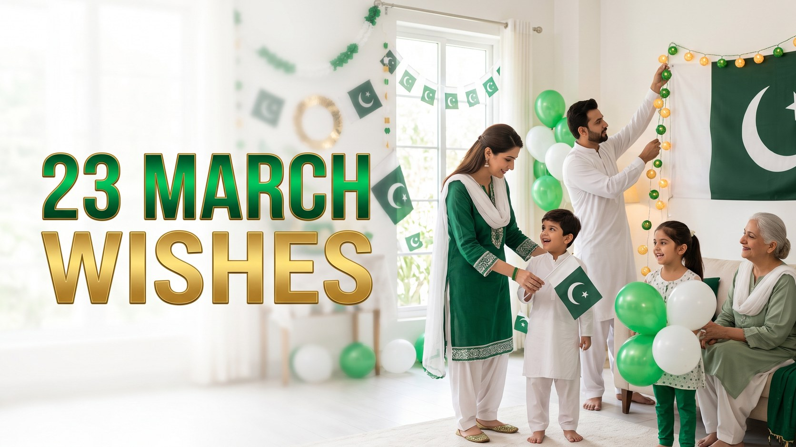

Wedding Wishes & Messages: What to Write for the Couple
Published October 10, 2026 · Updated October 10, 2026 · By EventBuzz Team

A wedding wish lasts far longer than the wedding day. Long after the flowers fade and the photos are framed, couples re-read their cards — and the words that stay with them are never the longest ones, but the most sincere. Every message below was written fresh for EventBuzz and sorted by relationship, so whether you are congratulating a best friend, a sibling, or a colleague you barely know, you will find words that fit. If the couple is marking a Nikah ceremony, our Nikah Mubarak wishes and duas collection has respectful greetings made for that moment.
Wedding Wishes for Friends
Warm, personal and a little celebratory — for the friend whose happiness feels like your own.
- Congratulations, my friend! I have watched this love story from the first page, and I cannot wait to cheer through every chapter.
- To my favourite couple: may your marriage be full of laughter, late-night talks and a fridge that is always stocked for surprise guests like me.
- You found the person who makes your whole face light up. Hold onto that light. Congratulations!
- Wishing you both a lifetime of choosing each other, every ordinary day, in all the small ways that matter most.
- From classmates to soulmates — what a journey. So proud of you both. Congratulations on forever.
- May your home be loud with laughter and your hearts be quiet with peace. Congratulations, lovebirds.
- I knew from the way you talked about them that this day was coming. So happy it is finally here. Congratulations!
- Here is to love that grows kinder, funnier and stronger with every year. Congratulations to you both.
Wedding Wishes for Siblings
For the brother or sister you grew up with — part pride, part nostalgia, all love.
- To my dearest sibling: I shared my toys with you, my secrets with you, and now I get to share this beautiful new chapter. Congratulations!
- Watching you find your person has been one of the great joys of my life. Welcome to the family, new brother/sister-in-law!
- You annoyed me for twenty years and then went and made me cry happy tears at your wedding. Congratulations — I love you.
- May your marriage have all the warmth of the home we grew up in, and twice the laughter. Congratulations!
- My sibling, my first friend: wishing you a love as steady as the bond we have always shared.
- Congratulations! Mum and Dad get a new favourite child-in-law, and I get a lifelong partner in surviving family dinners.
Formal Wedding Wishes for Coworkers and Acquaintances
Polished and kind — safe for office cards, clients and couples you know less closely.
- Congratulations on your marriage. Wishing you both a lifetime of happiness, health and shared success.
- Warmest congratulations to you and your partner. May this new chapter bring you every joy.
- It is a pleasure to congratulate you on this wonderful occasion. Best wishes for a long and happy marriage.
- Wishing you a beautiful wedding day and a marriage filled with love and laughter. Congratulations from all of us at work.
- Congratulations! May your years together be as rewarding as the dedication you bring to everything you do.
- Heartfelt congratulations on your wedding. We wish you and your family every happiness.
Light and Funny Wedding Wishes
Gentle humour that makes the couple smile without stealing the moment. Keep it kind, keep it short.
- Congratulations! You have officially found the one person who will listen to your stories on repeat forever. True love indeed.
- Marriage: when dating goes pro. Congratulations, champions — may your teamwork always win.
- Wishing you a lifetime of love, laughter, and agreeing on what to watch without a thirty-minute debate.
- Congratulations on finding someone who has seen you at your worst and signed up anyway. That is the real thing.
- May your love be modern enough for two phone chargers and old-fashioned enough to last forever.
- Thanks for the free party, you two. Oh — and congratulations on the marriage part too!
Short Wedding Wishes for WhatsApp and Texts
One line, whole heart — copy, personalise, send.
- Congratulations to the most beautiful couple! Wishing you forever. 💍
- So happy for you both. Here is to a lifetime of love!
- Two hearts, one beautiful beginning. Congratulations!
- Wishing you love that grows stronger every single year.
- Congratulations! May your marriage be your greatest adventure.
- To the couple who makes love look effortless — congratulations!
- Cheers to forever, starting today. So proud of you both.
- Happy wedding day! May every year together beat the last.
What to Write in a Wedding Card: The Four-Beat Formula
If a blank card makes your mind go blank, use this simple structure. Beat one: the greeting. Name them both — "Dear Sara and Ahmed" always beats a generic "Congratulations." Beat two: one true observation. Mention something real: "The way you both laugh through every problem tells me everything about your future." Beat three: one honest wish. Wish for something specific — patience in hard seasons, adventure in good ones, a home full of friends. Beat four: the warm sign-off. "With all our love," plus your name, plus one small offer: "Dinner at ours once you are back — no excuses." A card written this way takes three minutes and gets kept for thirty years. For milestone messages down the road, bookmark our anniversary wishes for couples.
Frequently Asked Questions
What is the best short wedding wish?
"Congratulations! Watching the two of you together makes love look easy. Wishing you a lifetime of that same ease and joy." It congratulates, compliments and wishes — all in two sentences.
How do I write a wedding wish for a coworker I do not know well?
Keep it warm and professional: congratulate the couple, wish them health and happiness, and sign off with your name and team. The formal section above has ready-to-use lines.
Is it okay to send a funny wedding wish?
Yes, if the humour is gentle and the couple enjoys a laugh. Tease situations, never the bride, groom, families or the marriage itself. When in doubt, save jokes for close friends.
When should wedding wishes be sent?
Cards are traditionally given on the day or sent within a few weeks after. A WhatsApp message on the wedding morning or the day after is warmly welcomed and never too late to be appreciated.
Can I copy these wishes for my card or post?
Yes. Every wish here is original to EventBuzz and free for personal use in cards, messages, captions and speeches. Adding the couple's names makes any of them feel handwritten.
Conclusion
The couple will forget the seating chart and the playlist, but they will re-read your words. Pick the line that sounds like you, add their names and one true detail, and send it with love. When the engagement comes first, our engagement wishes will help you celebrate that step too.
Congratulations to every couple starting forever — may your story be a kind one.